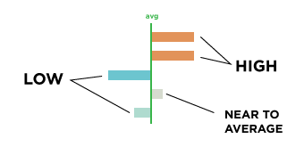

<!DOCTYPE html>
<html>
    <head>
        <script type="text/javascript" src="lib/jquery.min.js" charset="utf-8"></script>
        <script type="text/javascript" src="lib/d3.v3.min.js" charset="utf-8"></script>
        <!-- <script src="http://d3js.org/d3.v3.min.js" charset="utf-8"></script> -->
        <link rel="stylesheet" type="text/css" href="style.css">
    </head>
    <body>
        <div id="map">
            <h1></h1>
            <div id="color-key">
                <div class="title">Color Key</div>
                <div class="color-bar"></div>
                <div class="avg-bar" width="100%" height="20px"></div>
                <div class="labels">
                    <div class="low">low</div>
                    <div class="avg">average</div>
                    <div class="high">high</div>
                </div>
			</div>
            <div class="tooltip"></div>
            <div id="selected-name">
                <span class="place"></span>
                <span class="value"></span>
            </div>
            <div id="hovered-name">
                <span class="place"></span>
                <span class="value"></span>
            </div>
               <div id="city-average-name">
                <span class="place"></span>
                <span class="value"></span>
            </div>
            
            <div id="annotation">
                <div class="source"></div>
                <div class="desc"></div>
            </div>
        </div>
        <div id="graphs">
        </div>
        <div id="shield"></div>
        <div id="popup">
            <h2>Hints for exploration!</h1>
            
<p>This graphic is meant to be explored. Almost every part of the maps and charts can be clicked on for more information.</p>
<p>Things that are <span id="red">RED</span> indicate values that are high, relative to the average.<br>
Things that are <span id="blue">BLUE</span> indicate values that are low, relative to the average.<br>
Things that are <span id="gray">GRAY</span> are close to the average.<br>
The <span id="green">average value</span> is often indicated with a green line.<br></p>

<p>click anywhere to get started!</p>
    
    </div>
    </body>
    <script type="text/javascript">
        var specialRows = ["Source","Date","ShortLabel","DataSource","Description","MinimumValue","MaximumValue","AverageValue","GeographicScale","AveValueGeo"];
        var exclueRows = ["Area Name","Type","Specific area"];
		var selectColor = "#5C8385";
		var highlightColor = "#FF5E85";
        var collection, descObj, sourceObj;
        var selectedArea = null,
        mostRecentAttr = "Percentage of Total Population",
        mostRecentData,
        numberOfCPAs,
        masterData = {},
        metaData = {};

        d3.json("data/map.json",function(collection){
            d3.csv("data/CPA.csv",function(csv){
                var c = [];
                csv.forEach(function(d){
                    if (specialRows.indexOf(d["Area Name"]) == -1 && d["Area Name"]) {
                        c.push(d);
                    } 

                    if (!metaData[d["Area Name"]]) metaData[d["Area Name"]] = {};
                    metaData[d["Area Name"]] = d;
                });

                generateMap(collection);
                numberOfCPAs = c.length;

                d3.csv("data/order.csv",function(order){
                    var headings = d3.nest().key(function(d){
                        if (d["Chrolopleth Map Cat"] != "")
                            return d["Chrolopleth Map Cat"];
                    }).entries(order);
                    headings.shift();
                    //organizing by subject heading, then adding graphs one by one
                    headings.forEach(function(s,index){
                    	var imageIndex = index+1;
                        var section = graphs.append("div").attr("class","section");
                        section.append("h2").html(""+s.key);
                        var div = section.append("div").attr("class","graph-names").style("display","none");

                        s.values.forEach(function(graph){
                            var attr = graph["IndicatorName"];
                            var set = d3.nest().entries(c)
                                .map(function(d){
                                return {
                                    "Area Name" : d["Area Name"],
                                    "attr" : attr,
                                    "val" : parseFloat(d[attr]),
                                    "format" : d[attr+"-FORMAT"]
                                }
                            });
                            if (attr == mostRecentAttr)
                                colorizeMap(set,attr);
                            generateBars(set, attr, metaData["AverageValue"][attr], metaData["MinimumValue"][attr], metaData["MaximumValue"][attr], div);
                            masterData[attr] = set;
                        });
                    });

                    $("#graphs").find("h2").click(function(){
                        var plusMinus = $(this).find("span").text() == "" ? "-" : "";
                        $(this).find("span").text(plusMinus);
                        var p = $(this).parent();
                        p.find(".graph-names").slideToggle();
                    });

                    $("#graphs h3").click(function(){
                        var plusMinus = $(this).find("span").text() == "" ? "-" : "";
                        $(this).find("span").text(plusMinus);

                        $(this).toggleClass("active");

                        d3.select(this).each(function(d){ mostRecentAttr = d; });

                        var p = $(this).parent();
                        p.find(".wrapper").slideToggle();
                    });
                });
            });
        });

        var graphs = d3.select("#graphs"),
            map = d3.select("#map");

        function generateMap(collection) {
            var svg = d3.select("#map").append("svg").attr("width","400").attr("height","600").append("g");

            var projection = d3.geo.albers().scale(45000)
                .translate([280, 230])
                .rotate([118.25,0])
                .center([0, 34.05]);

            var path = d3.geo.path().projection(projection);

            var paths = svg.selectAll('path')
                .data(collection.features)
                .enter().append('path').attr("fill","#fff");

            paths.attr('d', path)
                .attr("class",function(d){
                    d.color = "#fff";
                    d.placeName = getClassName(d.properties.NAME_ALF);
                    return d.placeName;
                }).on("mouseenter",function(d){
                    var strokeColor = (selectedArea && selectedArea != d.placeName) ? highlightColor: selectColor ;

                    var nameDiv = (selectedArea && selectedArea != d.placeName) ? "hovered" : "selected";
                    setAnnotation(nameDiv, d.properties.NAME_ALF, metaData[d.properties.NAME_ALF][mostRecentAttr+
                            "-FORMAT"], metaData[d.properties.NAME_ALF][mostRecentAttr]);

                    map.selectAll("path").sort(function (a, b) { 
                        if (a.placeName != d.placeName && a.placeName != selectedArea) return -1;
                        else return 1;
                    });
                    d3.select(this).attr("stroke",strokeColor);
                    highlightData(d.placeName);

                }).on("mouseleave",function(d){
                    if (d.placeName == selectedArea) return;
                    d3.select(this).attr("fill",function(d){ return d.color || "#fff"; });
                    d3.select(this).attr("stroke","none");
                    resetAnnotation("hovered");
                    if (!selectedArea) resetAnnotation("selected");
                    resetBars();
                    map.select(".tooltip").style("display","none");
                }).on("click",function(d){
                    if (selectedArea == d.placeName) {
                        d3.select(this).attr("stroke","none");
                        resetAnnotation("selected");
                        selectedArea = null;
                        resetBars();
                    } else {
                        selectedArea = d.placeName;
                        resetAnnotation("hovered");
                        setAnnotation("selected",d.properties.NAME_ALF, metaData[d.properties.NAME_ALF][mostRecentAttr+
                            "-FORMAT"], metaData[d.properties.NAME_ALF][mostRecentAttr]);
                        map.selectAll("path").sort(function (a, b) { 
                            if (a.placeName != selectedArea) return -1;
                            else return 1;
                        });
                        highlightArea(d.placeName);
                        highlightData(d.placeName);
                    }
                });
        }

        function colorizeMap(dataset, attr) {
            map.select(".attr-name").text(attr);

            var min = metaData["MinimumValue"][attr],
                max = metaData["MaximumValue"][attr],
                avg = metaData["AverageValue"][attr],
                format = metaData["AverageValue"][attr+"-FORMAT"];

            console.log(metaData)

            dataset.forEach(function(v,i){
                map.select("."+getClassName(v["Area Name"]))
                    .transition()
                    .attr("fill",function(d){
                        d.color = colorData(v.val, avg, min, max);
                        return d.color;
                    });
            });
            fillAnnotation(attr);
 			map.select("#city-average-name .place").text("City Average: ");
            map.select("#city-average-name .value").text(formatNumber(format, avg));
            if (selectedArea) {
                dataset.forEach(function(p){
                    if (p.placeName == selectedArea) {
                        setAnnotation("selected", p["Area Name"], p.format, p.val);
                    }
                })
            }
        }

        function formatNumber(format, num) {
            if (format == " Integer " || format == " Rate ")
                return String(num).replace(/(\d)(?=(\d\d\d)+(?!\d))/g, "$1,");
            else if (format == " Dollar ")
                return "$"+String(num).replace(/(\d)(?=(\d\d\d)+(?!\d))/g, "$1,");
            else if (format == " Percent ")
                return (num*100).toFixed(0) + "%";
            return num;
        }

        function getClassName(n) {
            return n.toLowerCase().replace(/ /g,"_");
        }

        function generateBars(s, attr, avg, min, max, parent) {
            var graphHeight = 75,
                barMaxHeight = 60;
            s.sort(function(a,b){ return b.val - a.val; });

            var id = attr.toLowerCase().replace(/ /g,"-");
            var div = parent.append("div").attr("id","graph-"+id).attr("class","graph").style("width","100%");

            div.on("mouseenter",function(d){
                colorizeMap(s,attr);
            }).on("mouseleave",function(d){
                colorizeMap(masterData[mostRecentAttr],mostRecentAttr);
            });

            div.append("h3").data([attr]).html("<span>+</span> "+attr);

            var wrapper = div.append("div").attr("class","wrapper").style("display","none");
            var svg = wrapper.append("svg").attr("height",graphHeight).attr("width","95%");
            var barWidth = $("#graphs").width()*.92/s.length;
            var g = svg.selectAll("g").data(s);
            var entering = g.enter().append("g")
                .attr("class",function(d){ 
                    d.placeName = getClassName(d["Area Name"]); 
                    return d.placeName;
                });
                entering.append("text");
                entering.append("rect")
            g.exit().remove();

            var barScale = d3.scale.linear().domain([0,max]).range([2,barMaxHeight]);

            g.attr("transform",function(d,i){
                return "translate("+i*(barWidth)+",0)";
            });

            g.select("text").text(function(d){
                return formatNumber(d.format, d.val);
            }).attr("y",function(d){
                return (graphHeight - barScale(d.val) - 4);
            });

            g.select("rect").attr("height",function(d){
                return barScale(d.val);
            }).attr('width',barWidth-7)
            .attr("y",function(d){
                return (graphHeight - barScale(d.val));
            }).attr("fill",function(d){
                d.color = colorData(d.val, avg, min, max);
                return d.color;
            });

            g.on("mouseenter",function(d){
                map.selectAll("path").sort(function (a, b) { 
                    if (a.placeName != d.placeName && a.placeName != selectedArea) return -1;
                    else return 1;
                });
                map.select("."+d.placeName).attr("stroke",function(d){
                    if (selectedArea && d.placeName != selectedArea)
                        return highlightColor
                    else 
                        return selectColor;
                });

                var parentDiv = (selectedArea && selectedArea != d.placeName) ? "hovered" : "selected";
                setAnnotation(parentDiv, d["Area Name"], d.format, d.val);

                highlightData(d.placeName);
            }).on("mouseleave",function(d){
                resetAreas();
                resetBars();
            }).on("click",function(d){
                if (selectedArea == d.placeName) {
                    selectedArea = null;
                    resetAreas();
                    resetBars();
                } else {
                    selectedArea = d.placeName;
                    resetAnnotation("hovered");
                    setAnnotation("selected", d["Area Name"], d.format, d.val);
                    highlightArea(d.placeName);
                    highlightData(d.placeName);
                    
                }
            });
        }

        function fillAnnotation(attr) {
            map.select("h1").text(attr);
            var a = map.select("#annotation");
            a.select(".source").text(metaData["DataSource"][attr]);
            a.select(".desc").text(metaData["Description"][attr]);
        }

        function highlightArea(p) {
            map.selectAll("path").attr("stroke","none");
            // map.selectAll("path").attr("fill",function(d){ return d.color; });
            map.select("."+p).attr("stroke",selectColor);
        }

        function resetAreas() {
            map.selectAll("path").attr("stroke",function(d){
                if (d.placeName == selectedArea) return selectColor;
                return "none";
            });
            if (!selectedArea) {
                resetAnnotation("selected");
            }
            resetAnnotation("hovered");
        }

        function resetAnnotation(div) {
            map.select("#"+div+"-name .place").text("");
            map.select("#"+div+"-name .value").text("");
        }
        function setAnnotation(div, place, format, val) {
            map.select("#"+div+"-name .place").text(place+": ");
            map.select("#"+div+"-name .value").text(formatNumber(format, val));
        }

        function highlightData(p) {
            var g = graphs.selectAll("g");
            g.each(function(d){
                var t = d3.select(this);

                if (t.attr("class") == p) {
                    t.select("rect").attr("stroke",(selectedArea && d.placeName != selectedArea) ? highlightColor  : selectColor ).attr("stroke-width",2);
                    t.select("text").style("display","block");

                } else if (t.attr("class") == selectedArea) {
                    t.select("rect").attr("stroke", selectColor);
                    t.select("text").style("display","block");

                } else {
                    t.select("rect").attr("stroke","#ccc")
                    t.select("text").style("display","none");
                }
            });
        }

        function resetBars() {
            graphs.selectAll("text")
                .style("display",function(d){ return (d.placeName == selectedArea) ? "block" : "none"; });
            graphs.selectAll("rect")
                .attr("stroke",function(d){ return (d.placeName == selectedArea) ? selectColor : "none"; });
        }

        $(window).resize(function(){
            var barWidth = $("#graphs").width()*.92/numberOfCPAs;

            var svg = graphs.selectAll("svg");

            svg.each(function(){
                var g = d3.select(this).selectAll("g")
                g.attr("transform",function(d,i){
                    return "translate("+i*(barWidth)+",0)";
                });

                g.select("rect").attr('width',barWidth-7);
            });
        });

        $("#popup").click(function(){
            $(this).fadeOut();
            $("#shield").fadeOut();
        });

        function colorData(val, avg, min, max) {
            if (val > avg) {
                var colorScale = d3.scale.linear().domain([avg,max]).range(["#D4DCCF","#F07221"]);
            } else {
                var colorScale = d3.scale.linear().domain([min,avg]).range(["#55A4DB","#D4DCCF"]);
            }
            return colorScale(val);
        }
    </script>
</html>
